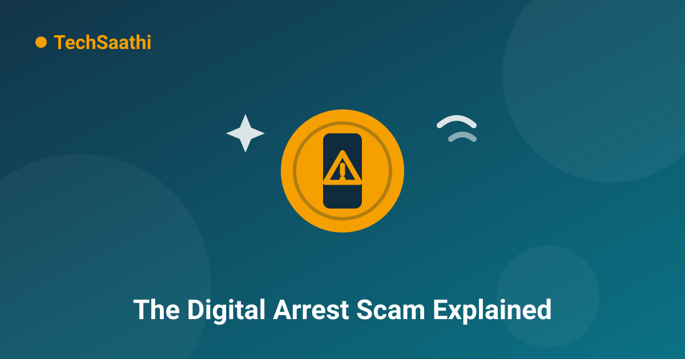

Digital Arrest Scam: What It Is and How to Stay Safe

A phone rings. The caller says a parcel with your name on it was caught at the airport — inside were drugs and fake passports. Minutes later, a WhatsApp video call connects: men in police uniforms, a "police station" behind them, and an officer reading out your Aadhaar number. You are told you are under "digital arrest" and must stay on camera until the matter is "verified" — and that clearing your name will require a small payment. This is not the police. This is one of the most organised scams India has ever seen, and it has emptied the savings of doctors, teachers, retired officers and engineers. Here is exactly how it works, and the one line that defeats it.
What Exactly Is a "Digital Arrest"?
A digital arrest is a scam, not a legal process. No law in India allows anyone to arrest you over a phone or video call. Arrests happen in person, with an arrest memo, and you must be produced before a magistrate — things that happen in the physical world, never on a screen. The scam borrows the word "arrest" only to frighten you. The scammer's entire operation is a video call, a costume, and a script designed to keep you scared, isolated and paying.
The reason it works is simple: it mixes three things people find hard to argue with — fear of the police, respect for authority, and embarrassment about being "involved" in a crime. Victims are often intelligent, educated people, because the scam attacks panic, not intelligence.
The 7-Step Playbook Scammers Follow
Reports from the Indian Cyber Crime Coordination Centre (I4C) and advisories from the RBI and PIB describe the same pattern again and again. Once you can see the script, the magic breaks:
Step 1 — The trigger call. You get an automated or human call about a parcel, a courier, or a SIM card registered in your name involving "illegal material". You did nothing wrong — which is exactly why you feel safe arguing at first.
Step 2 — The handover. The caller "transfers" you to a "police officer" or "CBI official" — sometimes even to a fake "central agency". Each transfer makes the story feel bigger and more official.
Step 3 — The video call. You're moved to WhatsApp or Skype video. Uniformed "officers" sit in what looks like a police station — many gangs rent real office space, put up boards and flags, and even wear genuine-looking uniforms. Some show fake court documents and arrest warrants with your photo.
Step 4 — The paperwork shock. They read out your real name, Aadhaar or passport details — often from data leaked in earlier breaches — to prove they "know everything about you".
Step 5 — The isolation. This is the heart of the trap. You are told the case is "highly confidential", that you cannot tell family or your bank, and that you must stay on video call for hours or days. A scared person alone in a room is the scammer's ideal environment.
Step 6 — The money demand. A way out appears: a "verification deposit", "clearance fee", or "RBI security hold" that will be "refunded". You are pushed to move money fast — UPI, RTGS, or even crypto — before you can think.
Step 7 — The drain. One payment becomes two, then five. The "case" never closes. By the time the call ends for real, accounts are empty and loans have been taken in your name.
Rule Zero: Police Never Do This
Memorise one sentence and share it with everyone in your family: no genuine government agency in India investigates, interrogates, or arrests anyone through a video call, and no genuine agency ever asks you to pay money to prove your innocence. Not the police, not the CBI, not customs, not the RBI, not a bank. Arrests require physical presence and written procedure. "Fees" to avoid arrest do not exist. The moment money enters the conversation, the mask is off — it is a scam, full stop.
Red Flags: How to Recognise It in 10 Seconds
- A call about a parcel, SIM, or bank account "involved" in a crime you know nothing about
- Pressure to switch to WhatsApp/Skype video and stay connected continuously
- "Officers" in uniform sitting in front of official-looking backdrops
- Threats of arrest "within hours" and instructions to keep everything secret
- Any demand for money, deposit, "verification" or "clearance" — in any form
- Instructions to download apps, share OTPs, or open links during the call
Even one of these is enough to end the call. The whole structure depends on you staying on the line — hanging up is not rude, it is the correct response.
What to Do If You Get Such a Call
First, hang up. You lose nothing by doing so — genuine agencies do not vanish because you cut a call. Second, do not call back the same number or follow any link sent to you. Third, if you are worried the call might be real, independently verify: look up the police station's or agency's official number yourself and call it directly. Fourth, report the number on the Chakshu portal (sancharsaathi.gov.in) so others can be warned, and file a complaint at cybercrime.gov.in or call 1930 if you shared any information.
If Money Has Already Gone — Act in the Golden Hour
Speed matters more than embarrassment. Call 1930 or file on cybercrime.gov.in within the first hour — the sooner the complaint is lodged, the higher the chance the money is frozen while it is still moving between mule accounts. Inform your bank immediately and ask them to flag the transactions. Save everything: screenshots, numbers, UPI IDs, transaction IDs. And please — tell your family. Shame is what the scammer sells; sharing is what defeats it. Money recovered is never guaranteed, which is why the only reliable fix is refusing to pay in the first place.
Protect the People Who Answer the Phone
Digital arrest gangs target people who are alone through the day — retired parents, homemakers, professionals working from home. A five-minute family conversation can prevent a five-lakh loss. Tell your parents and grandparents the one-line rule, save 1930 in their phones, and agree on a family code: any call claiming to be from police, customs or the bank gets ended immediately and discussed with you first. Our guides on online scam safety and UPI safety rules pair well with this one.
Conclusion
The digital arrest scam is theatre — costumes, props, scripts and pressure — aimed at one thing: your money. It has no legal power, no real case file, and no way to actually arrest anyone. It only works while you stay scared, stay silent and stay on the call. Break any one of those three — hang up, speak up, verify on your own — and the entire performance collapses. Save 1930, share this article with your family group, and you have already done most of the protection job. 🛡️
Frequently Asked Questions (FAQ)
Can police in India arrest someone over a video call?
No. Arrest under Indian law requires physical custody, an arrest memo and production before a magistrate. No police officer, CBI, customs or RBI official conducts arrests or interrogations over WhatsApp, Skype or any video call. A video-call "arrest" is always a scam.
I shared my Aadhaar and PAN details on such a call but didn't pay. What now?
Stay calm — details alone are not money, but they can be misused. Call 1930 or file at cybercrime.gov.in mentioning what you shared, keep an eye on your bank statements, and consider enabling transaction alerts and a lower UPI limit for a while. Watch for follow-up calls: scammers often call back with "good news" that your case is closed for a small fee. That is the same scam, second act.
What is the "golden hour" in cyber fraud?
The first hour after money leaves your account, when it is still moving between mule accounts. A complaint filed on 1930 or cybercrime.gov.in in this window reaches banks fastest, and the money can be frozen mid-transit. Every hour after that, recovery chances drop — so report first, feel bad later.
Scams end where awareness begins — share this with your family group today! 🛡️